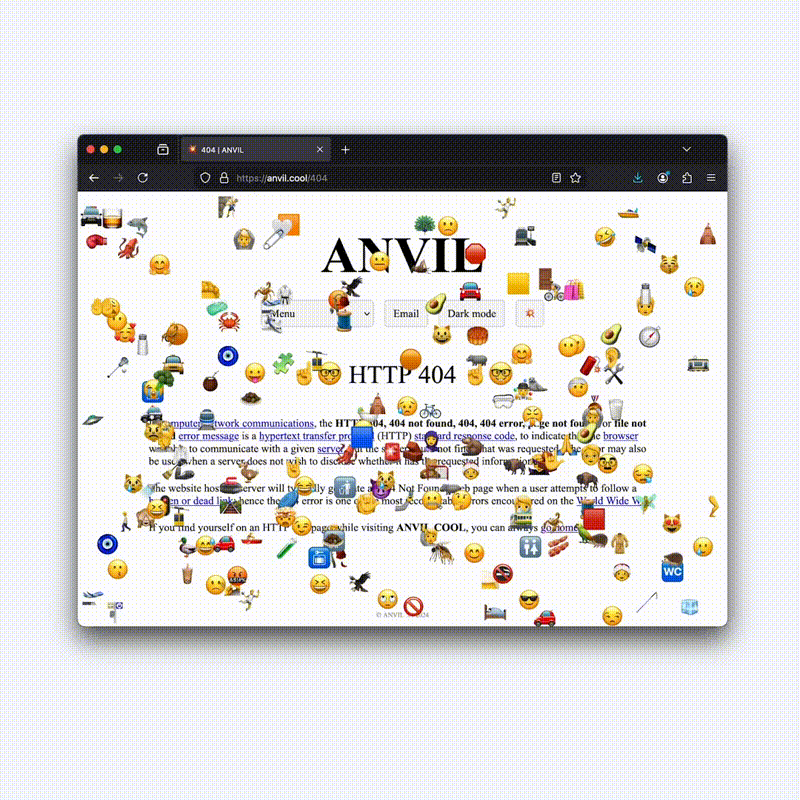

ANVIL
2023
Website, Portfolio
Web portfolio for ANVIL, a directing duo from Toronto, Ontario.
Visit the site at anvil.cool.

Fun highlights from this project include:
- We were very inspired by a raw early-2000s web aesthetic, and a lot of scientist websites but wanted to mix this aesthetic with something more modern and on brand for ANVIL (hence the emojis).
- I had a dream where Toby asked me for a dark mode on the website. I built the feature (inverting colours, as is typical on a lot of modern websites), and he told me he meant that he ‘wanted the lights off’. The next day, I shared this dream with Toby over FaceTime and we decided it was actually a funny enough play on 'dark mode' to implement on the site you see today.
Co-creative directed alongside Toby and Tank. Developed by me. Additional graphics by me as well ︎☺